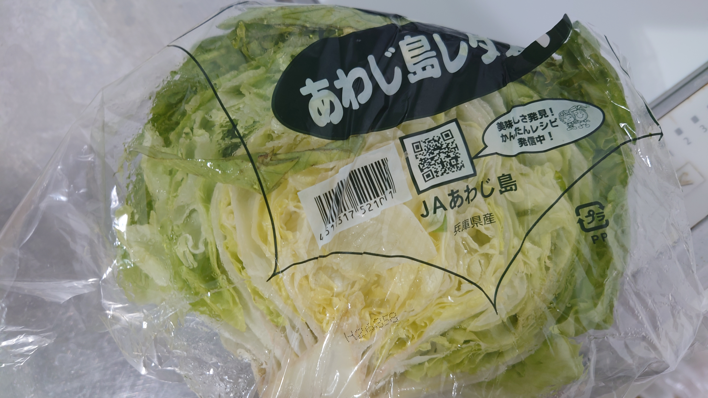
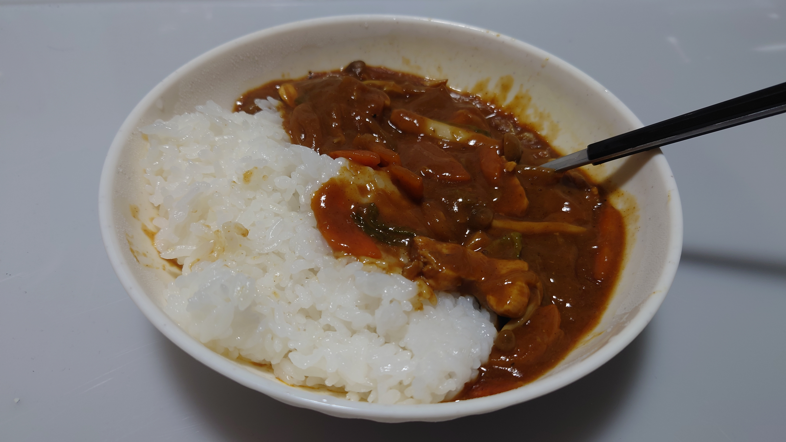

こんにちは、ザクザク食感です。
5月だ！！！
今日もカレーを食べます。
一週間分のカレーを一気につくって毎日それを食べると、週の食費が2000円くらいで抑えられるのでかなり助かってます。
でもさすがに飽きた……何か変えないと
カレーの変遷
ジャガイモ解雇（3日目以降になるとかなり味がぼやけるため）→シメジ追加（安くて美味しいため）→炒める段階でケチャップを追加（焦げる寸前まで焼いたケチャップが激うまなため）
今のカレーに足りないものは、それは！
情熱思想理念頭脳気品優雅さ勤勉さ！
そして何よりも！
緑 が 足 り な い

レ タ ス 参 戦

完成
いただきます。
レタスどこ？？？
1玉入れればよかったです。
味については若干レタスの繊維を感じて美味しいので、間違いではないと思います。役割としては味噌汁にレタスを入れたときみたいな感じです。
ちなみに、カレーに入れる野菜はだいたい乱切りだけど、にんじんだけは半月切りが好きです。
みんなはどうですか？そもそもそんなに選択肢がないか。
あと、カレーに入ってるお肉は何が好きですか？
僕はもともとチキンカレーが好きなので今は鶏むね肉を入れているけど、本当は豚バラを入れたいです。
来週はカレーに何を入れてみようかな～ってことだけ考えて生きています。
でも給料入ったらもっといろんなもの食べたい！今めちゃくちゃ唐揚げが食べたいです。
それでは、さようなら。